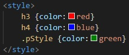

Style tags can be placed anywhere in the document and the styles for the specified html elements will be put into effect.
Multiple style tags can be put in the document however the last placed style tag will be the one put into use throughout the whole document
It is not possible to change styles halfway through the document with another pair of style tags :(
In general external stylesheets should be made and applied to the document using a link element
Using the class attribute on elements, alternative styling can be done without specifying certain elements. These are named with a '.' and then its name. The dot is not included when specifying the class
The following shows the h2 and h3 tags with the associated style: Also the alternative styling is shown:
Paragraph green
This is how its coded:
The global attributes are supported. Global
The event atttributes are suported. Event Attributes
The style tag has 2 other attributes:
- Media attribute. This attribute allows for a desired media device that the styling is to be suited best for.
- Further Media Attribute Information- Type attribute. This attribute helps specify the content between the style tags. Default is text/css
- Further Type Attribute information